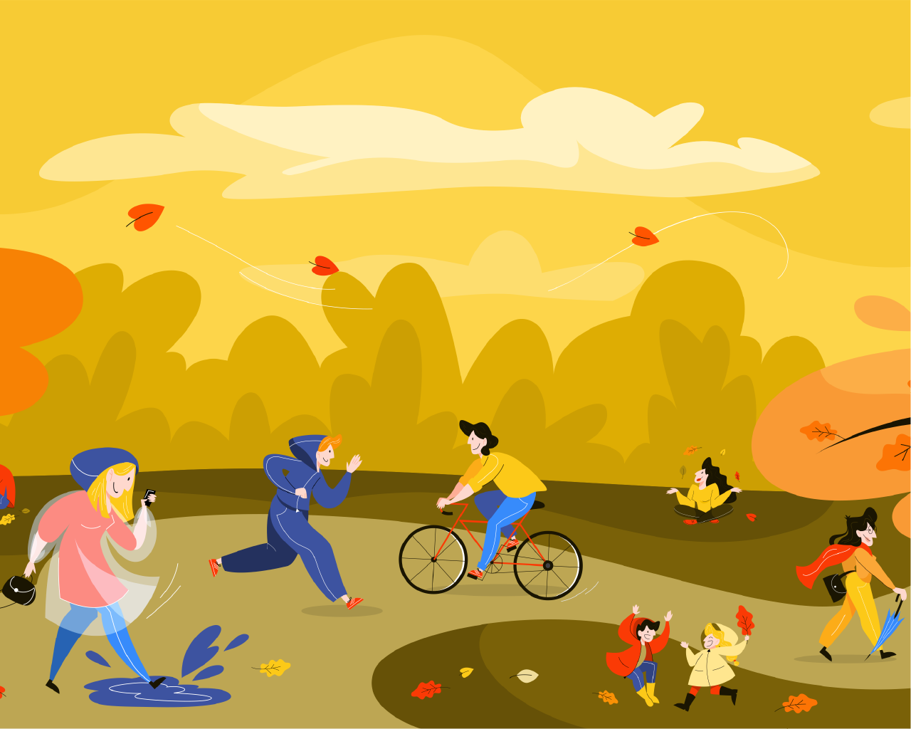

Truth 1: We are Movement Machines
Our bodies are built to move, from the functioning of our eyes to the shape of our posture to size of our brains. Our ancestors moved all day long, and by adding in natural movement to our day, we can be true to what our bodies need.